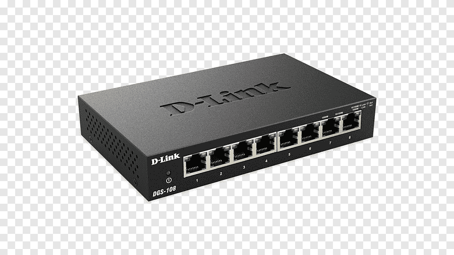

Topic 3. Network Components
The Harmony of Connectivity

Now, think of your digital life as a grand orchestra, and network components are the instruments playing in perfect harmony. Transmission media quietly carry data melodies, be it the wired rhythm of Ethernet or the wireless beats of Wi-Fi. Hardware devices take the spotlight—hubs, switches, routers, and modems performing in unison for flawless connectivity.
Don't forget the software, the silent conductor guiding the symphony of connectivity and enhancing security measures. This orchestrated blend transforms your digital experiences into a seamless joy where connectivity and security dance in perfect harmony.
Essential Network Components
Transmission Media:
Transmission media form the pathways for data travel in a network, and they come in two primary types:
Wired: This includes cables such as the following:
UTP (Unshielded Twisted Pair) Cable: |
Common and cost-effective Consists of twisted pairs of wires Used in Ethernet networks |
|
Coaxial Cable: |
Two conductors with inner conductor and outer shield Offers better bandwidth than UTP Faster data transfer rates and resistance to electromagnetic interference More expensive than UTP |
|
Fiber-Optic Cable: |
Immune to electromagnetic interference Very high bandwidth Core made of glass or plastic fibers transmitting data using light Excellent for high-speed data transfer Can transmit data over longer distances than UTP and coaxial cables |
|
UTP Cable Types:
There are seven (7) categories of UTP cables, ranging from Cat 1 to Cat 7. However, the most commonly utilized categories in contemporary networking, particularly in Ethernet, are Cat 5 to Cat 7. Each category have varying data transfer rate suitable on various purposes.
| Category | Description | Typical Use | Maximum Speed | Maximum Length |
|---|---|---|---|---|
| CAT1 | Telephone wire | Telephone services (ISDN, PSTN) | Not suitable for computer network traffic | Varies |
| CAT2 | Token Ring networks | Token Ring networks | Up to 4 Mbps | Varies |
| CAT3 | Twisted copper wires | Token Ring networks | Up to 10 Mbps | 100 meters |
| CAT4 | Twisted copper wires | Token Ring networks | Up to 16 Mbps | 100 meters |
| CAT5/5e | Twisted copper wires | Computer networks and telephone traffic | Up to 1 Gbps | 100 meters |
| CAT6 | Twisted copper wires with physical separator | Gigabit Ethernet | Up to 1 Gbps (100 meters), 10 Gbps (55 meters) | 100 meters |
| CAT6A | Enhanced CAT6 | Gigabit Ethernet with better crosstalk and EMI immunity | Up to 10 Gbps | 100 meters |
| CAT7 | Shielded twisted copper wires with additional cable shield | High-speed networks | Up to 10 Gbps | 100 meters |
Wired networks, using cables like Ethernet, offer faster data transfer rates and enhanced security, though they are less flexible due to physical constraints.
Wireless: Utilizing radio waves or infrared signals, wireless networks like Wi-Fi and cellular data (4G, 5G) are highly flexible, allowing connections without physical cabling. However, they may have slower data transfer rates and increased vulnerability to interference and security breaches.
The choice between wired and wireless connections significantly influences network speed, reliability, security, and cost.
Hardware
Hardware components in network architecture include:
|  |  |
|||
RouterDirect data traffic between networks based on destination IP addresses. |
SwitchesControl network traffic within a single network, directing data to specific devices. |
HubA hub is the core component of a local area network (LAN); it is also known as a repeater or concentrator. Every device linked to a hub is on the same subnet and receives all data transferred there. |
ServerHigh-powered computers hosting data and applications accessible by network devices. |
FirewallAct as security guards, safeguarding the network from unauthorized access and malicious attacks, which can either be hardware or software. |
Software
Various software components contribute to effective network management and security:
|
|
Network Management SoftwareMonitors, manages, and troubleshoots network performance. Example: SolarWinds Network Performance Monitor, a tool that provides a comprehensive view of your network’s performance, including real-time monitoring, alerts, and reporting. It also offers advanced features such as network topology mapping, device discovery, and network traffic analysis. |
|
|
Network Security SoftwareEnsures user security by detecting and preventing unauthorized access. Example: WatchGuard Network Security, a network security and firewall software. WatchGuard includes secure Wi-Fi, multi-factor authentication, and network intelligence products and services. |
|
|
Network Management SoftwareNetwork Simulation Software: Simulates network environments for testing and educational purposes. Example: Packet Tracer, a cross-platform visual simulation tool designed by Cisco Systems that allows users to create network topologies and imitate modern computer networks without the need of hardware. |
Basic Network Security
Possessing a fundamental understanding of network security is crucial to prevent viruses or unauthorized intrusions that could potentially harm your devices and compromise your personal safety.

Transmission Media Security:
For wired networks, implement robust encryption like WPA2 to ensure data confidentiality. Wireless networks, reliant on radio waves or infrared signals, benefit from strong encryption (e.g., WPA3), regular password updates, and firewalls for access control, mitigating unauthorized access risks.
Hardware Security
Secure network hardware components by changing default router credentials, enabling strong authentication, and regular firmware updates. Switches enhance security with VLANs for traffic segregation and disabled unused ports. Servers require robust access controls, software updates, and intrusion detection. Firewalls, acting as gatekeepers, filter traffic, establish rules, and undergo regular updates for threat prevention.

Software Security
Network management software should utilize secure communication, undergo regular updates, and enforce strong authentication. Network security software requires frequent updates for threat prevention. Network simulation software, for testing, should replicate actual security configurations.
Simple Things You Can Do
Learn how to keep things safe online by following simple rules, like using strong passwords and being aware of the dangers of unauthorized access.
REMEMBER!
The integration of transmission media, hardware, and software not only forms the foundational structure of a network but also serves as a powerful tool for ensuring network security. These components act as both the building blocks that construct the network and the means by which security is reinforced, creating a resilient and protective environment for effective communication and optimized performance. Moreover, the more awareness you earn and apply in network learning, the more safety you gain—underscored by the principle that knowledge without application is akin to a network without security measures.